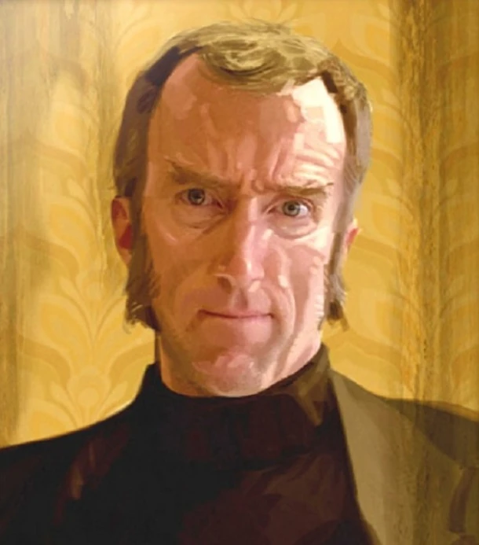

Aperture Science Daily Bulletin
Celebrating Aperture Science's Anniversary and the Legacy of Cave Johnson

Cave Johnson: The Visionary Who Built Aperture Science
To All Aperture Science Employees,
Today, as we celebrate another year of groundbreaking innovation at Aperture Science, it’s only fitting that we take a moment to reflect on the man who made it all possible: Cave Johnson. Without his bold vision and relentless drive, we wouldn’t be the leaders in science we are today. In fact, without Cave, there wouldn’t be an Aperture Science at all.
For those of you who have joined us more recently, you’ve probably heard the stories—the Cave Johnson stories. The man was a legend in every sense of the word. A self-made millionaire, entrepreneur, and genius with an unmatched thirst for discovery, Cave didn’t just think outside the box; he obliterated it. From the day he founded Aperture Fixtures (yes, we really started by making shower curtains), his goal was always the same: to create a company that would change the world.
But Cave Johnson wasn’t content with small, incremental progress. No, he was a man who believed in big ideas, even if they occasionally came with, let’s say, unexpected side effects. Who else would have thought of creating an interdimensional portal system for rapid travel—or testing it by sending in lab assistants, interns, and, well, anyone willing to sign the waiver? That was Cave for you—his mind never stopped pushing the boundaries of what was possible, and he never let a few, um, casualties slow him down.
His famous motto, “When life gives you lemons, don’t make lemonade. Make life take the lemons back!” perfectly captures his unstoppable determination. He wasn’t interested in simply adapting to obstacles; he wanted to obliterate them. And his legacy is written into the walls of this facility. Every chamber, every experiment, every breakthrough we’ve made is a testament to the bold, fearless spirit of Cave Johnson.
Though he’s no longer with us, Cave’s influence is still very much alive in everything we do. The core of Aperture Science—the belief that nothing is impossible if you have enough persistence and the willingness to take risks—is a philosophy that came straight from Cave himself. He encouraged all of us to dream big, think bigger, and never, ever let practical limitations get in the way of progress.
Of course, we’re all aware of the risks he took with the development of certain experimental materials (yes, I'm looking at you, Repulsion Gel), but that's part of his genius. Cave didn’t fear failure, and because of that, Aperture Science has been at the forefront of innovation. Sure, sometimes it took a few explosions (and the occasional hazardous substance leak), but Cave’s pioneering spirit made Aperture Science what it is today.
As we look forward to the future—one filled with even more breakthroughs in portal technology, AI development (thank you, GLaDOS), and slightly safer testing procedures—we must also honor the past. And that means honoring Cave Johnson.
So today, on this special anniversary, I ask all of you to take a moment to appreciate the man who dared to dream the impossible and demanded that we achieve it. Raise a glass (preferably filled with something non-toxic) to Cave Johnson—the founder, the visionary, and the man who made science what it is today.
Here’s to another year of blowing the roof off of science!
- David Charles ##########################
PS: If anyone has been handling the Combustible Lemons prototype, please report to the safety department immediately. Cave would be proud, but we still need to file the paperwork.